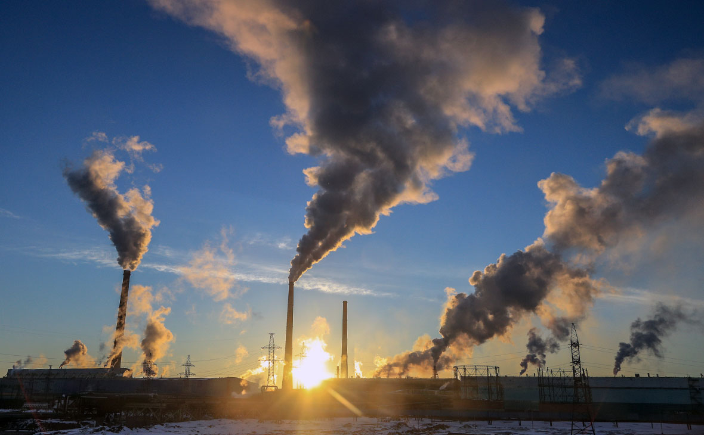
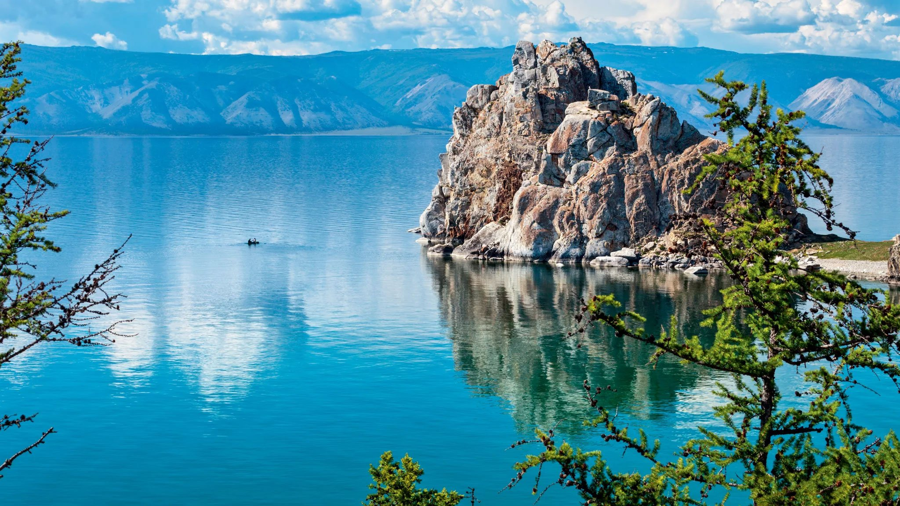

Россия – крупнейшее по территории государство мира с богатым разнообразием природно-климатических условий. Любой субъект Российской Федерации по своим масштабам может быть приравнен к тому или иному государству Европы, территория некоторых Федеральных округов страны сопоставима с площадью ряда крупнейших государств мира. Страна обладает высоким разнообразием территориального распределения природных ресурсов и расселения населения. Поэтому в данном разделе особенности природных ресурсов и охраны природы страны представлены как в общероссийском разрезе, так и на уровне Федеральных округов и субъектов Российской Федерации.
Роль России в мировой повестке, посвященной чистоте воздуха, велика, и участие страны в глобальных проектах по охране природы принесет действительно существенные результаты — правительство держит курс на усиление природоохранной политики. В 2019 году в России стартовал национальный проект «Экология», включивший в себя пять направлений и десять федеральных проектов.
В 2022 году Россия заняла 86-е место из 131 в рейтинге стран с самым загрязненным воздухом согласно данным IQAir. Концентрация PM2.5 (взвешенных твердых микрочастиц и мельчайших капелек жидкости) в стране в 2,2 раза выше рекомендуемого ВОЗ среднегодового значения качества воздуха. Самый чистый воздух во Владивостоке, а самый грязный — в Красноярске. В столице уровень загрязнений оценивается как средний.
Запасы пресных вод находятся в реках, подземных водах, ледниках и озёрах страны. По величине годового речного стока Россия занимает одно из первых мест в мире.
Запасы пресных вод по территории Российской Федерации распределены неравномерно. Самым большим речным стоком обладают территории Сибири и Дальнего Востока. Здесь расположены речные бассейны Оби, Енисея, Лены, Амура. В европейской части выделяется река Волга с притоками. Большая часть населения нашей страны проживает на территориях с недостаточной обеспеченностью водными ресурсами для такого количества жителей. В бассейнах Каспийского, Чёрного и Азовского морей проживает около 70%.
Для сохранения чистоты водоёмов необходимо контролировать уровень загрязнения воды и принимать суровые меры в отношении загрязнителей.
Природные ресурсы России — богатство страны, обеспечивающее ее развитие и процветание. Наша страна занимает первое место в мире по запасам природного газа, торфа, железной руды, леса. В первой десятке по нефтяным залежам, угля, алмазов, золота, сланцев и др. Практически все природные залежи, которые есть на планете, можно найти на территории РФ. Все их можно классифицировать на несколько основных типов: минеральные, рекреационные, водные, топливные, лесные и земельные.
Лабораторная работа 4
Сибряев Егор Витальевич
6404
2024